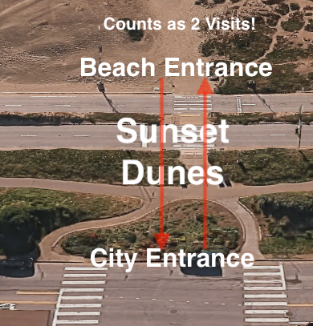

Sunset Dunes Attendance Detailed Analysis
I have the raw attendance figures for Sunset Dunes. The double-counting is through the roof.
It has been widely reported that there were 1.7 million visitors to Sunset Dunes in its first year. I requested and received the raw data from Parks and Rec. I suspected that this number was far too high. What I saw was far worse than I had imagined. From what I can see the real numbers are nowhere close to the reported numbers. The double-counting is astonishing.
One caveat. It's clear that the numbers provided were not 100% accurate given the limitations of counting people in an outdoor setting electronically. Two people might be passing a counter at the same time for example. A second caveat is that I do have questions about the data and have requested clarification from Parks and Rec.
There are four important columns within the spreadsheet I received. There are entrances from the “city” and from the “beach”. There are also counts for the bike path and the “beach trail” which I assume to be the short sand trail that parallels the road from about Kirkham to Moraga. These last two were not available for all dates.
Extensive Double Counting
The spreadsheet takes all of these numbers and combines them in the total. This, despite the fact that the only way to get to the other three counters is from the “city” entrances.
Those who aren't familiar with Sunset Dunes need to know that almost everyone who goes to the beach does so by entering the park from the city side. They then cross the bike path, cross the road and enter the beach. When they leave, they cross back out. In the data I found that when someone crosses the road to go to the beach and then leaves by crossing the road again, they are counted twice.

The Numbers
According to the data I received, here are the numbers for city and beach entrances for the first year the park was open:
- Count (City)
- 927,457
- Count (Beach)
- 650,566
- City Minus Beach
- 276,891
How did they get to 1.7 million? They added these two numbers together and also included the counts for the bike path and beach trail. This is clearly not legitimate. Almost everyone who goes to the neighboring beach, also walks through the “city” counters.
The number people really want to know is how many people are actually using the new park? The beach has always been there and will still be there if the road is reopened. If we look at the people that enter the park, but don't cross the boundary to the beach, it's 276,891 or just 760 people per day.
Only 760 People Per Day!
According to these numbers, there are just 760 people actually using the new park on a typical day and not just crossing it to get to the beach.
The Data Control Group
The documents I received also included 19 days prior to the opening of the park. The first two days look very suspect, but the other 17 made an excellent control group. During those 17 days there were 28,880 entrances from the beach, and 32,395 entrances from the city side. That means that 90% of the people entering from the city side proceeded to the beach. That makes perfect sense. At the time, when the road was open to traffic there were only two places for people to go, the bike path or the beach. Most went to the beach.
It checks out in another way. For the first full year after the park opened there were 1,780 beach visits per day. In those 17 days prior to the opening, there were an average of 1,700 beach visits. We would expect very little change and that is what we saw.
Conclusion
The number of people using the beach did not change after the road was closed. The number of visits for the subsequent 365 days is almost identical to the days prior to the closure.
According to the city data, the number of people that actually use Sunset Dunes and don't simply cross to the beach is just 760 per day.
Prior to its closure, an average of 14,000 cars were using the highway every day.